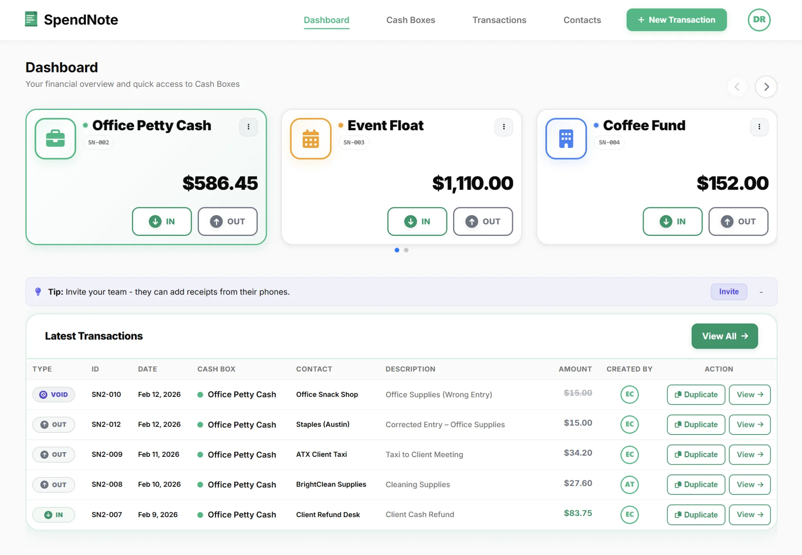

This Happens Every Week
Monday morning. You open the cash box. There should be $340. There is $280.
Nobody knows what happened to the other $60. Someone bought supplies. Someone paid for parking. Someone grabbed cash and forgot to write it down.
The money was spent. But there is no record.
This is the reality of petty cash — a small fund businesses keep for minor everyday expenses. The concept takes 10 seconds to understand. Managing it without losing money is the hard part.
Why Petty Cash Gets Out of Control
Every business that handles cash hits the same problems eventually:
- Nobody writes it down — someone takes $20 and forgets to log it. By Friday, $80 is missing and nobody remembers what happened.
- Multiple people have access — when everyone can open the box, nobody feels responsible for tracking it.
- Receipts disappear — paper slips get lost, thrown away, or shoved in a drawer. By reconciliation time, half the evidence is gone.
- The boss finds out too late — small gaps snowball quietly. By the time someone notices, the shortage is too big to trace.
The cash is real. The problem is visibility. Without a system, nobody knows who has the money, how much is left, or where it went.

What a Working System Looks Like
The concept is straightforward: a fixed amount of cash in a locked box, one person in charge, and every transaction logged. Four moving parts:
- A set float — typically $100–$500, replenished when low
- A custodian — one person who hands out cash and collects receipts
- A log — who took cash, how much, what for, when. This is the part most businesses skip.
- Regular reconciliation — count the cash, match it to the log, find gaps early
In reality, paper logs fall behind, receipts vanish, and nobody reconciles until the money is already gone. For a detailed setup walkthrough, see our petty cash management guide.
Stop Losing Track of Cash
SpendNote logs every transaction with a name and timestamp, generates receipts automatically, and shows real-time balances. Set up takes 30 seconds.
Start Tracking FreeNo credit card required. Plans from $19/month.
Who Actually Needs Petty Cash?
Small Business Owners
You are not always on-site. Staff handles cash daily — supplies, tips, small purchases. You need to see where the money goes without having to ask.
Office Managers
You handle the cash box. The boss asks for the balance and you have to dig through a drawer full of crumpled receipts. A tracked system means you always have the answer.
Field Teams & Construction
Cash moves fast on job sites. Materials, fuel, crew expenses — tracked from any device, on the spot, before anyone forgets.
Nonprofits & Community Groups
Volunteers handle money for events, supplies, activities. Every penny needs to be accounted for. A paper log is not enough when multiple people touch the cash.

The Real Cost of Not Tracking
Petty cash feels small. But untracked cash adds up:
- $20 missing this week, $20 next week — that is $1,000 a year with zero documentation
- Reconciliation takes hours instead of minutes because nobody logged anything
- When the auditor asks “where did this cash go?” — you have no answer
- Trust breaks down between team members when money disappears
The fix is not more rules. It is a system that makes logging faster than skipping it. And no, a Word template is not that system.
So What Exactly Is Petty Cash?
Petty cash is a small, fixed amount of physical cash a business keeps on hand for minor day-to-day expenses. The word “petty” comes from the French petit — it literally means “small cash.”
Office supplies, parking, postage, delivery tips, small repairs — anything too small for a bank transfer or purchase order. Most businesses set a per-transaction limit of $50–$75. Anything above that goes through normal purchasing.
Petty Cash vs. Other Terms You Will Hear
| Term | What It Means | Different From Petty Cash? |
|---|---|---|
| Cash register | Holds customer payments — revenue coming in | Yes. Petty cash is money going out for expenses. |
| Cash on hand | All cash a business holds (bank, register, reserves) | Petty cash is one specific part of it. |
| Cash float | The starting amount in a register or cash box | The float is the petty cash starting balance. |
| Cash advance | Money given to an employee for a specific task | Comes from the petty cash fund. See guide. |
Ready to Start?
A lockable box, one person in charge, and a way to log transactions. That is all you need. Fund it with $100–$300 and start tracking.
For a complete first-week checklist, see how to start a petty cash box. If you want to skip the paper and start digital, create a free SpendNote account — it takes 30 seconds.
Important: SpendNote tracks internal cash movements and generates receipts as proof. It does not replace accounting software, tax filings, or payroll systems. Your accountant handles the books — SpendNote handles the cash box.
Frequently Asked Questions
What happens when petty cash does not balance?
It means cash left the box without a record. The gap could be a forgotten transaction, a lost receipt, or an unauthorized withdrawal. The faster you catch it, the easier it is to trace. A tracking system shows exactly when the discrepancy appeared.
How much should I keep in petty cash?
Most small businesses keep $100–$500. Start with one to two weeks of estimated small-cash spending. If the box empties too quickly, increase it. If it barely moves, reduce it. Our float calculator breaks down the math.
Can I track petty cash digitally instead of on paper?
Yes. A digital system like SpendNote logs every transaction with a name, amount, and timestamp — and generates a receipt automatically. No paper slips to lose, no manual reconciliation math, and the balance updates in real time.
Do I need petty cash if my team uses company cards?
If every expense goes through a card, probably not. But most businesses still have cash-only situations: tipping, local markets, small vendor payments, parking meters. If it happens more than once a month, a petty cash fund is faster than reimbursing people.